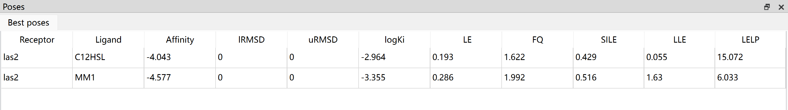
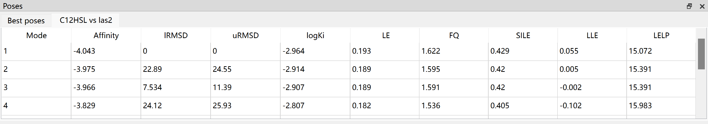

Docking Poses
Pose View
Best poses
After docking finished, you can view the best docked poses for each receptor and ligand in pose table.

The best pose table contains receptor name, ligand name, affinity (or free binding energy), RMSD score, logKi and some metrics.
Calculation of logKi
The Ki millimolar (mM) to yoctomolar (yM) will be converted to Molar (M). And then, calculate the log10 of Molar.
Calculation of Metrics
LE |
Ligand efficiency |
-∆G/N |
SILE |
size-Independent Ligand efficiency |
-∆G/(N^0.3) |
FQ |
Fit Quality |
LE/(0.0715+7.5328/N+25.7079/(N^2) -361.4722/(N^3)) |
LLE |
Lipophilic ligand efficiency |
-logKi-logP |
LELP |
Ligand Efficiency dependent Lipophilicity |
logP/LE |
where ΔG is the free energy of binding, N is the number of heavy atoms (non-hydrogen atoms) of ligand, Ki is estimated inhibition constant, logP is the calculated octanol-water partition coefficient
Job poses
In addition to best poses, the Dockey also allows you to view poses for each docking job. You can click a job in job table, a new tab named ligand vs receptor will be display in pose panel.

Pose exporting
The best pose table and job pose table has right-click menu that helps you to export the poses.
{kind=link}
Save Selected Pose: Export current selected pose to a pdb file
Save All Poses: Export all poses to a pdb file
Save Receptor Ligand Complex: Export compound containing receptor and ligand to a pdb file
Export Table: Export current table to CSV file
View Details: View the details of pose including Ki.
Pose Visualization
You can click one pose in best pose table or job pose table to view the 3D structure of ligand-receptor complex in PyMOL view.

Go to File menu -> Export As Image to save the 3D structure in PyMOL view to PNG file.
Go to File menu -> Export As File to save the content of PyMOL view to pdb file.